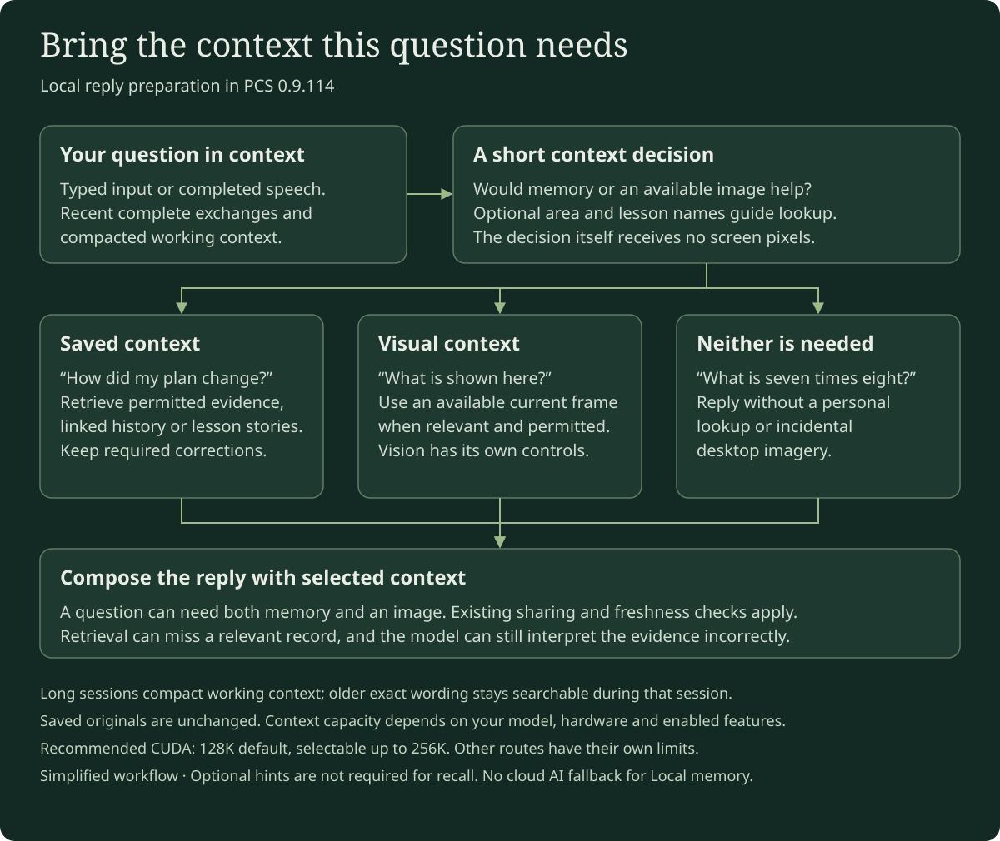
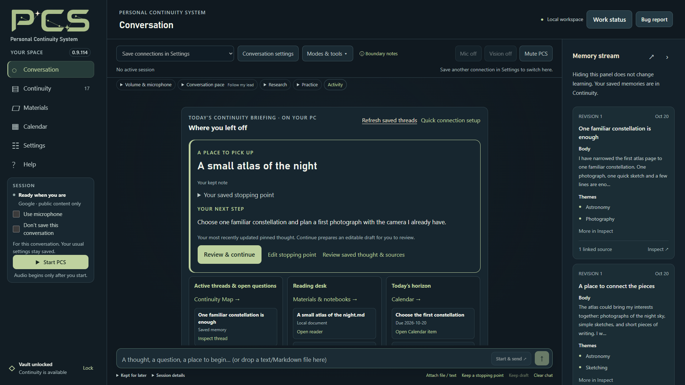
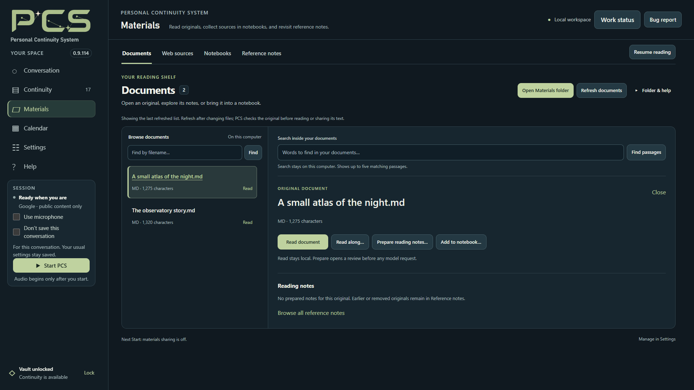
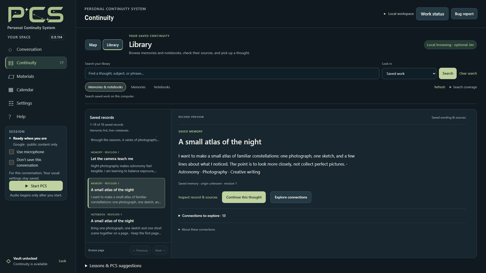

Start with typed conversation
The established Local route requires a compatible NVIDIA GPU. Model size, context, vision and GPU speech affect memory use; there is no single verified memory requirement for every combination. Google, OpenAI and typed Meta cloud connections do not require a Local AI GPU.
The established Windows CUDA route requires a compatible NVIDIA GPU. The guided Recommended setup uses Gemma 4 12B QAT Q4_0, a default 128K conversation context and the pinned llama.cpp b10964 CUDA runtime. Model, runtime, optional vision projector and speech packs are separate from the PCS download. Keep them outside the application folder so a fresh PCS installation can reuse them.
- In the welcome screen’s Quick Setup, choose Local on this PC → Open Local model & files, or use Settings → Connections.
- In Local model & files, choose Download to folder… or Use existing files… for the model and matching llama.cpp CUDA runtime. Wait for verification.
- Review Memory & sharing, then Save settings.
- Use microphone starts off. Type a short message and press Enter or Start & send ↗, or choose Start PCS before typing.
Typed conversation needs no cloud AI key or speech pack. Hardware needs depend on the model, context window, vision and any GPU speech components. CPU semantic search is a separate feature; it does not enable CPU conversation. The Radeon and Linux previews have their own narrower limits.
Recommended Local ordinary replies disable the model template’s separate thinking phase to avoid spending the reply allowance without an answer. This does not enlarge the allowance; complex replies can still reach their limits. Custom templates and helper requests retain their own policies.
How long conversations are handled
Under Settings → Connections → Local model & files, choose a conversation context of 8K, 16K, 32K, 64K, 128K or 256K for Recommended on CUDA or Custom GGUF. Choose FP16 or Q8_0 KV cache. FP16 is the default; Q8_0 can reduce cache memory use, with a possible speed tradeoff. The model, available GPU memory and enabled features determine what fits.
Long Local sessions automatically compact their working context at about 80,000 prompt tokens, or earlier when another limit requires it. Recent complete exchanges remain in the prompt. Older exact wording stays searchable for that session, including conversation awaiting memory processing; saved originals remain unchanged. This temporary archive ends when the session closes. A notice confirms compaction, and the first reply afterward may take longer while the model rebuilds its prompt cache.
Unchanged prompt prefixes can be reused on CUDA. Active replies take priority over eligible background memory formation, which can retry later. These changes manage repeated work; actual speed and long-session answer quality depend on your setup. A large context window does not guarantee that every detail will be recalled.
How Local chooses memories and screen input
In 0.9.114, Local checks whether your question needs saved context before composing its reply. A question such as “What did we decide about my project?” can initiate a lookup without a separate instruction to use memory. It asks for focused evidence, with activity scope, sharing permissions, current sources and required corrections still checked.
When Vision is enabled, Local includes an available current frame only for a relevant visual question or follow-up. A personal identity question should use permitted saved evidence; a question about the character you are playing can need the screen instead. A question can need both. This controls which image reaches the reply; screen capture has separate controls.


The optional memory hints setting is separate and is not required for this Local check. The decision adds some processing time, and models can still misjudge relevance or answer incorrectly. A blocked or failed lookup does not establish that nothing was saved; inspect the PCS lookup notice and important source material.
Custom GGUF and saved setups
Saved setups make it easier to return to a compatible Local model without rebuilding its configuration. They use the same PCS vault; changing the model does not replace your saved memories and notes. Review the connection-switching steps.
Experimental model support · Custom GGUF lets you select model and runtime files, choose a context window up to 256K, and run Check compatibility. A selected vision projector also needs checking. Checks cover text, tools, structured output and selected vision; they do not guarantee every architecture or model’s quality. Choose a window supported by your model and hardware; a smaller context may not fit every enabled tool.
Under Saved custom setups, choose New custom profile, name it, and Save current setup. Keep up to eight named setups, including model, runtime, projector, context, listening and voice choices. Enable Show in Conversation picker to switch while stopped.
Existing Custom GGUF setups keep the window you chose. A Recommended setup saved before 0.9.107 runs at 128K; until Settings are saved again, its automatic cache choice remains Q8_0 beside GPU listening or voice, otherwise FP16. Helper jobs such as Prepared Notes retain their own context limits.
Use profile selects a saved setup for the next Start. Save unfinished Settings edits before switching. Profiles do not carry API keys or sharing permissions; review original-source sharing again for the new setup. Remove profile keeps its files and current settings.
Control how much the AI speaks on its own
Before Start, choose Follow my lead, Think with me or Take the lead in Conversation pace. These choices guide how PCS develops your thread. Quiet pauses optional suggestions, and Stay here keeps attention on the current direction.
For Local only, Allow brief quiet-moment openings in Local is a separate checkbox that is off by default and is not restored from saved Settings. Select it before Start and choose Take the lead to invite a brief contribution during a pause. Google, OpenAI and Meta quiet openings remain unavailable; their ordinary conversation pace choices remain separate.
An opening needs a current idea, at least 45 seconds of quiet, the visible and focused Conversation page, an empty composer, quiet playback and no other work. Attempts stay at least three minutes apart, with at most one per complete human input and two within a fifteen-minute invitation. Typing, leaving or unfocusing the page, Quiet, Stay here and Stop cancel a pending opening.
Preparing an idea can add one Local request before your ordinary reply, making that reply slower. The model may choose no idea. An opening uses no tools and is not saved as a conversation source or learned memory. Only an opening confirmed displayed by the browser joins the Local session context for your next reply; that confirmation does not establish that you read or heard it.


Quiet openings remain experimental. Behavior and usefulness can differ by model, and voice or long-session quality is not established by this interface illustration. The app’s Help and docs/CONVERSATION_CARRYING.md describe the full limits.
Search by meaning, on CPU
The optional Nomic search model finds related wording in memories and permitted conversation passages without cloud embeddings. Open Settings → Optional tools → Search by meaning, select both the model and CPU search runtime, enable Use local semantic memory search, save and Start.
The temporary index stays in RAM and clears at Lock. Ordinary word search remains available while it builds or if the search model fails. This search is English-focused and can miss relevant passages; it complements inspection and exact wording searches.
For cloud search indexes, Search capacity… shows space use and offers a separate review to retire an old provider’s index. Removing search vectors preserves saved memory wording and does not start a rebuild.
Set up speech recognition and spoken replies
Open Settings → Optional tools → Local listening & voice. For microphone input, select one Offline English listening pack: CPU or NVIDIA GPU. Local and Meta microphone conversations use these local speech choices. Meta sends the recognized conversation text to Meta; it does not use native Meta speech-to-speech. Then choose a reply engine:
- Windows: an installed desktop voice.
- Kokoro · CPU: the matching CPU voice pack.
- Kokoro · NVIDIA GPU: the matching GPU voice pack and available GPU resources.
Typed Local or Meta conversation needs no listening or voice pack. Choosing Meta does not download packs or require a Local conversation model. Read along uses an available local browser/OS voice, separately from this conversation voice. Reading alone does not send a source to an AI.
Save, enable Use microphone, Start, and allow browser microphone access. Local recordings allow up to 60 seconds, warn at 50 seconds and end after 1.5 seconds of continuous silence. A recording that reaches the limit is processed once as partial speech; Calendar, Notebook, Remember and Practice changes still require a complete turn. Meta keeps its separate 30-second limit.
Listening pauses during recognition, processing and replies. GPU listening stays loaded during the session. If speech fails, text replies can continue; use a fresh Start after changing the voice setup.
Start prepares the selected engines; GPU voice can take around a minute on its first preparation. PCS records separate startup and recognition timings in Bug report without retaining audio or recognized words. These measurements help diagnose delays; they do not establish faster startup or more accurate recognition on your hardware.
Share your screen or ask for tutoring
For vision, install OBS separately, then choose a scene and matching Local projector under Settings → Optional tools → Vision. Preview the scene before sharing. Local can attach an available permitted frame when the question or its follow-up needs visual context; it does not send continuous video to the reply model. See how Local chooses reply context.
The default maximum Vision image width is 1920 pixels, preserving its proportions. Existing saved width choices stay in place. A larger permitted image can use more processing and context; review the scene itself for private content.
Compatible Local models also support Proactive help, which starts Off. In Settings → Optional tools → Proactive help, review its model and inputs before enabling offers. Image input needs the projector. Offers wait during conversation activity and can be dismissed or paused. These screen and tutoring offers are separate from the quiet-opening option above.
Saved proactive approvals can be restored when you return to the exact reviewed model, inputs and key. New combinations need review. When upgrading an older approval, complete the updated Review model and inputs → Allow → Save settings step; the disclosure includes selected Activity and automatic following when enabled.
In Tutoring: concepts and practice, type a problem and Your current step, or check a permitted screen observation. Choose Confirm problem and step, then ask for a concept, hint or practice. Typed tutoring works without Vision. Full solutions require a separate request; exact checks cover supported arithmetic and linear equations, not every subject.
Optional online lookup and preparation
Local conversation and memory have no cloud AI fallback. Explicit Local online lookup, under Settings → Optional tools → Web & study research, needs its own Brave Search API key. Queries and public-page requests leave the PC; the selected model interprets excerpts locally. Keep private details out of queries.
Once enabled, public lookup remains available during activities, including while automatic activity following is waiting or pending. Ordinary questions about controls, hardware, DLC or unrelated topics need no extra activity approval or conversation restart. Title and progress guide relevant story answers; spoiler avoidance is best effort. Saved-memory permissions remain separate.
Local conversation does not create retained Study research notes. Materials preparation and notebook outlines can use a supported Local or explicitly selected cloud helper. Review the provider and source scope before approving a portion or bounded Prepare book sequence; a Local conversation does not make a separately selected cloud helper local. Local preparation can use up to 80,000 source characters per portion when the complete request fits, with a checkpoint after each portion and a new review on Resume preparation. The Recommended preparation helper keeps a 32K context independently of the conversation setting. See Prepared Notes and storage and sharing.


You can also review a UTF-8 .txt or .md attachment on the welcome screen and choose Save reviewed text in Materials while stopped. This copies exact text to an ordinary, unencrypted local file outside the vault, without an AI request. Back up Materials separately. Attachment choices and limits
Jev is an optional cloud service
Settings → Optional tools → Jev · help choose the next direction can use TypeSafe to choose among proposed directions when carrying is enabled. It starts off, needs its own API key and review, and requires a separate cloud permission with Local. The ordinary conversation model proposes ideas and writes the reply; Jev selects one idea or none. It does not write memories, perform research or start a conversation during silence. Jev does not enable conversation carrying or quiet openings.
The reviewed request can contain your latest complete statement, the current carrying mode and proposed directions. A proposal can reflect context already shared with the conversation model. An optional recent-conversation setting adds up to four eligible whole messages, bounded to 6,000 characters and ten minutes; unconfirmed or no-longer-permitted messages are omitted. Review these inputs before allowing them to leave the PC.
If you choose to remember credentials and save settings, PCS can restore Jev only for that exact reviewed connection and sharing choice. A changed key or unreviewed setup needs another review; turning Jev off removes that setup’s approval. Without remembered credentials, its key and review last only on the open page.
Library exploration is a separate Jev trial. Select a saved record in Continuity → Library, then Explore connections. Review the exact saved excerpts and required corrections before allowing a TypeSafe request. The conversation Jev switch can stay off; its approval does not authorize this saved-record sharing. Results are provisional suggestions, with no automatic memory or Map changes. Review the Library workflow.


Jev requests may add latency and provider cost. These optional trials do not establish better replies or cheaper conversations. Keep conversation Jev and online lookup off, and avoid Library exploration and cloud preparation requests, when you want the Local workflow to stay offline.
Radeon and Linux are separate previews
The Windows Radeon Vulkan text preview uses the recommended pinned model with a 16K context, CPU speech and CPU search. It requires an explicitly selected compatible discrete AMD adapter; integrated/APU devices are outside this preview. Custom models, vision, larger contexts and GPU speech are not qualified on this route. Real card/driver inference and performance still need testing; this is not an established Radeon support guarantee.
The Source ZIP includes an Ubuntu 24.04 x64 browser/cloud preview. Native Local AI, local speech/search packs and OS session-lock tracking are unavailable there; browser audio and OBS still need target testing. Linux installation and device acceptance remain separate from Windows checks. macOS is not included. The packaged docs/LOCAL_BACKENDS.md and docs/LINUX_PREVIEW.md describe these limits.
Stop, skip and check the result
Stop thinking cancels a Local answer, pending lookup and optional Jev selection after cancellation settles. Skip speech clears playback and unfinished speech synthesis. These controls do not undo already-saved actions; a save already committing must settle with its receipt. Stop PCS ends the session and unloads Local components.
The Local reply stopped… notice fades after six seconds, leaving your draft and conversation open. With reduced motion enabled, it dismisses without animation.
If startup fails, read the stage and check verified model/runtime paths and GPU support first. Speech downloads will not fix a model error. If a save is claimed, check the separate PCS save result and the record. The memory guide explains saving health, corrections and recovery.
Before upgrading, keep an encrypted backup and the old application folder. Restore into a fresh installation before creating a vault there; original Materials and Local model packs need their own copies. Follow the backup, restore and reader-version steps.